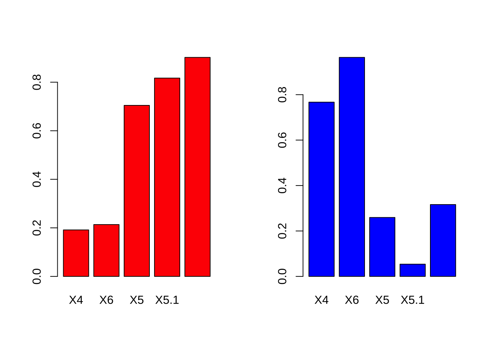
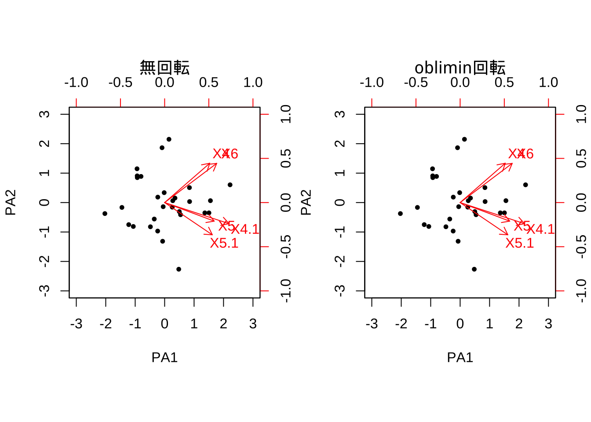

10 探索的因子分析
10.1 基本操作
データセット1: 従業員評価データ (仮想)
"selfeval30_jp.csv" (日本語版)
- 氏名/Name
- 専門性/Expertise (0-100)
- 分析力/Analytics (同)
- リーダーシップ/Leadership (同)
- プレゼン力/Presentation (同)
- コミュ力/Communication (同)
- n = 30, p = 5
- ※ 英語版は, "selfeval30_eg.csv"Rでは, 因子分析を実行する関数としてfactanal()が標準的に用意されている.
# (1) factanal: 最尤法only
tokuten <- read.csv("selfeval30_jp.csv", header = T,
row.names = 1, skip = 1)
# tokuten <- read.csv("selfeval30_eg.csv", header = T, row.names = 1, skip = 1)
tokuten_fac <- factanal(tokuten, factors = 2) # default varimax回転
tokuten_fac
tokuten_fac$loading
# 確認(各因子のloadingsベクトルの2乗和--> SS loadings))
sum(tokuten_fac$loading[, 1]^2)
#>
#> Call:
#> factanal(x = tokuten, factors = 2)
#>
#> Uniquenesses:
#> X4 X6 X5 X5.1 X4.1
#> 0.375 0.025 0.436 0.330 0.086
#>
#> Loadings:
#> Factor1 Factor2
#> X4 0.192 0.767
#> X6 0.214 0.964
#> X5 0.705 0.259
#> X5.1 0.817
#> X4.1 0.902 0.316
#>
#> Factor1 Factor2
#> SS loadings 2.060 1.688
#> Proportion Var 0.412 0.338
#> Cumulative Var 0.412 0.750
#>
#> Test of the hypothesis that 2 factors are sufficient.
#> The chi square statistic is 0.79 on 1 degree of freedom.
#> The p-value is 0.375
#>
#> Loadings:
#> Factor1 Factor2
#> X4 0.192 0.767
#> X6 0.214 0.964
#> X5 0.705 0.259
#> X5.1 0.817
#> X4.1 0.902 0.316
#>
#> Factor1 Factor2
#> SS loadings 2.060 1.688
#> Proportion Var 0.412 0.338
#> Cumulative Var 0.412 0.750
#> [1] 2.059975因子負荷量の解釈を助けるために, しばしば棒グラフを用いることがある.
# 因子負荷量barplot(factor loadings)
par(mfrow = c(1, 2))
barplot(tokuten_fac$loading[, 1], col = "red")
barplot(tokuten_fac$loading[, 2], col = "blue")
Tips: プロット時, 日本語が文字化けする場合の対応 (特に, macユーザー):
> par(family = "HiraKakuProN-W3")
または,
> par(family = "HG明朝E")因子行列の回転
# 因子（負荷量）行列の回転
# scores = "regression" ==> Thomson's score返す （デフォルト, 戻り値無)
tokuten_fac2 <- factanal(tokuten, factors = 2,
rotation = "none",
scores = "regression") # 回転なし
tokuten_fac3 <- factanal(tokuten, factors = 2,
rotation = "promax",
scores = "regression") # promax回転（斜交回転)
tokuten_fac4 <- factanal(tokuten, factors = 2,
scores = "regression") # varimax回転（直交回転)因子得点 (factor scores)
# 因子得点(factor scores)
tokuten_fac2$scores
#> Factor1 Factor2
#> 加藤 0.23534626 0.15855217
#> 伊藤 1.23370595 0.95269855
#> 山田 -0.56346722 0.28761502
#> 鈴木 0.62805702 0.18522322
#> 馬 0.88686200 1.09329950
#> 王 1.56456029 0.52332471
#> 劉 -0.09053557 -1.50738241
#> 趙 -0.21076825 -0.19247502
#> 呉 -0.69788742 -0.85933610
#> 尹 1.06118502 -0.06354378
#> 佐藤 0.48382317 -0.62995245
#> ルイス 0.81145507 -1.61211395
#> 徐 -0.67093030 2.19230011
#> スミス -1.40814751 0.24940587
#> 木村 2.09400532 0.69842516
#> 大野 0.27376550 0.13408837
#> ロペス -1.99490533 -0.63654635
#> 陳 0.33562192 0.59013326
#> 李 -0.05565485 -1.33708640
#> 張 -0.84977837 0.83806293
#> 黄 0.25160236 0.07855958
#> 朴 -1.51069009 -0.41622794
#> 池田 -0.81843618 1.20311877
#> 藤田 -0.09085408 -1.61362739
#> 周 -1.45279230 0.03210332
#> ハリス 1.18990771 -1.75642455
#> 田中 -0.14923034 0.15732490
#> 朱 -0.91680321 0.55521510
#> 楊 0.43098342 0.69526578
tokuten_fac3$scores
#> Factor1 Factor2
#> 加藤 0.219408133 0.10720000
#> 伊藤 1.283818226 0.48172903
#> 山田 0.208371727 -0.69700992
#> 鈴木 0.323930867 0.44308619
#> 馬 1.372011000 0.07673293
#> 王 0.875027790 1.06291610
#> 劉 -1.674860195 0.91334516
#> 趙 -0.252003720 -0.06268843
#> 呉 -1.078559445 -0.06104291
#> 尹 0.133319620 0.99713580
#> 佐藤 -0.600057569 0.85125538
#> ルイス -1.617312902 1.79436924
#> 徐 2.282195581 -2.05078928
#> スミス 0.004619814 -1.43210993
#> 木村 1.168945668 1.42392005
#> 大野 0.199864024 0.15792765
#> ロペス -1.081928057 -1.37555636
#> 陳 0.713177195 -0.08737323
#> 李 -1.480923045 0.83235061
#> 張 0.758824778 -1.31800875
#> 黄 0.134560577 0.17462582
#> 朴 -0.746948772 -1.08510768
#> 池田 1.166243186 -1.53072550
#> 藤田 -1.791748653 0.98317775
#> 周 -0.242875538 -1.32888100
#> ハリス -1.703532485 2.23026538
#> 田中 0.144420993 -0.23815673
#> 朱 0.434970258 -1.19166623
#> 楊 0.847040945 -0.07092112
tokuten_fac4$scores
#> Factor1 Factor2
#> 加藤 0.23584954 0.15780256
#> 伊藤 1.34885038 0.78119623
#> 山田 0.05288504 -0.63041326
#> 鈴木 0.40921064 0.51118482
#> 馬 1.34767508 0.40693967
#> 王 1.07669397 1.24997910
#> 劉 -1.42945691 0.48687920
#> 趙 -0.25794243 -0.12221125
#> 呉 -1.05958323 -0.32060687
#> 尹 0.34293721 1.00625321
#> 佐藤 -0.39989301 0.68630207
#> ルイス -1.18491064 1.36138073
#> 徐 1.77511188 -1.45096693
#> スミス -0.30226525 -1.39775478
#> 木村 1.43920208 1.67372440
#> 大野 0.22775172 0.20262377
#> ロペス -1.34441118 -1.60542739
#> 陳 0.67326923 0.08722316
#> 李 -1.25863138 0.45469169
#> 張 0.45396694 -1.10380559
#> 黄 0.16796550 0.20313283
#> 朴 -0.95717431 -1.24066417
#> 池田 0.80371582 -1.21300183
#> 藤田 -1.52791419 0.52680739
#> 周 -0.52029496 -1.35680847
#> ハリス -1.17520221 1.76629763
#> 田中 0.08911781 -0.19768367
#> 朱 0.16679796 -1.05875888
#> 楊 0.80667892 0.13568465因子負荷量 (factor loadings)
# 因子負荷量 (factor loadings)
tokuten_fac2$loading
#>
#> Loadings:
#> Factor1 Factor2
#> X4 0.782 -0.113
#> X6 0.973 -0.167
#> X5 0.507 0.554
#> X5.1 0.359 0.736
#> X4.1 0.634 0.715
#>
#> Factor1 Factor2
#> SS loadings 2.347 1.401
#> Proportion Var 0.469 0.280
#> Cumulative Var 0.469 0.750
tokuten_fac3$loading
#>
#> Loadings:
#> Factor1 Factor2
#> X4 0.779
#> X6 0.986
#> X5 0.706
#> X5.1 0.878 -0.162
#> X4.1 0.908
#>
#> Factor1 Factor2
#> SS loadings 2.094 1.624
#> Proportion Var 0.419 0.325
#> Cumulative Var 0.419 0.744
tokuten_fac4$loading
#>
#> Loadings:
#> Factor1 Factor2
#> X4 0.192 0.767
#> X6 0.214 0.964
#> X5 0.705 0.259
#> X5.1 0.817
#> X4.1 0.902 0.316
#>
#> Factor1 Factor2
#> SS loadings 2.060 1.688
#> Proportion Var 0.412 0.338
#> Cumulative Var 0.412 0.750
# tokuten_fac$loadingバイプロット
# 因子得点と因子負荷量のbiplot
# biplot(tokuten_fac2$scores, tokuten_fac2$loading)
# biplot(tokuten_fac3$scores, tokuten_fac3$loading)
# biplot(tokuten_fac4$scores, tokuten_fac4$loading)
biplot(tokuten_fac2$scores, tokuten_fac2$loading,
family = "HiraKakuProN-W3", main = "無回転") # 日本語文字化け対応 (mac)
biplot(tokuten_fac3$scores, tokuten_fac3$loading,
family = "HiraKakuProN-W3", main = "promax回転") # 日本語文字化け対応 (mac)
biplot(tokuten_fac4$scores, tokuten_fac4$loading,
family = "HiraKakuProN-W3", main = "varimax回転") # 日本語文字化け対応 (mac)
独自因子
10.2 ライブラリpsychの利用
ライブラリpsych内に収録されている関数fa()では, モデル推定方法や因子負荷行列の回転方法等に選択肢がある.
- モデル推定方法 (引数fm=): 最尤法 ("ml"), 一般化最小2乗法 ("gls"), 重み付き最小2乗法 ("gls"), 最小残差法 ("mires"). デフォルトは"mires"
- 回転方法 (引数rotate=): オブリミン ("oblimin"), バリマックス("varimax")など.主因子法で因子負荷量行列を推定し, 回転の掛け方の違いによる結果の比較を行う.
library(psych)
# 主因子法
tokuten_fa <- fa(r = tokuten, nfactors = 2 ,
rotate = "none", fm = "pa", scores = T) # 回転なし
tokuten_fa2 <- fa(r = tokuten, nfactors = 2 ,
rotate = "oblimin", fm = "pa", scores = T) #
# tokuten_fa <- fa(r = tokuten, nfactors = 2 , rotate = "none", fm = "ml", scores = T)
# デフォルト: rotate = "oblimin", fm = "minres"
# 最尤法, fm = "ml", 一般化最小2乗法, "gls", 重み付き最小2乗法"gls", 最小残差法"mires"
# PCAとの比較
# tokuten_fa # standardized loadings (pattern matrix)表示- 無回転のケース
summary(tokuten_fa)
#>
#> Factor analysis with Call: fa(r = tokuten, nfactors = 2, rotate = "none", scores = T, fm = "pa")
#>
#> Test of the hypothesis that 2 factors are sufficient.
#> The degrees of freedom for the model is 1 and the objective function was 0.04
#> The number of observations was 29 with Chi Square = 0.92 with prob < 0.34
#>
#> The root mean square of the residuals (RMSA) is 0.02
#> The df corrected root mean square of the residuals is 0.06
#>
#> Tucker Lewis Index of factoring reliability = 1.013
#> RMSEA index = 0 and the 10 % confidence intervals are 0 0.492
#> BIC = -2.45
tokuten_fa$loadings
#>
#> Loadings:
#> PA1 PA2
#> X4 0.639 0.557
#> X6 0.737 0.555
#> X5 0.702 -0.263
#> X5.1 0.675 -0.456
#> X4.1 0.911 -0.299
#>
#> PA1 PA2
#> SS loadings 2.730 0.985
#> Proportion Var 0.546 0.197
#> Cumulative Var 0.546 0.743
tokuten_fa$scores
#> PA1 PA2
#> 加藤 0.25949246 -0.15599390
#> 伊藤 1.50483809 -0.35001309
#> 山田 -0.35237241 -0.55980111
#> 鈴木 0.49836643 -0.30733106
#> 馬 1.36533582 -0.35021930
#> 王 1.55483685 0.06420171
#> 劉 -0.93194368 0.90696378
#> 趙 -0.23264920 0.18461466
#> 呉 -0.92860719 0.84713116
#> 尹 0.84207408 0.50752021
#> 佐藤 -0.01546955 0.33651638
#> ルイス -0.08819481 1.86289676
#> 徐 0.47994601 -2.26443758
#> スミス -1.06360898 -0.81206495
#> 木村 2.22200559 0.60316606
#> 大野 0.35145861 0.15254643
#> ロペス -2.02953448 -0.37425411
#> 陳 0.54033383 -0.41300554
#> 李 -0.80189402 0.88808401
#> 張 -0.23663835 -0.96850377
#> 黄 0.27629724 0.06320411
#> 朴 -1.45086359 -0.16546369
#> 池田 -0.06850518 -1.31480364
#> 藤田 -0.93738061 1.14782244
#> 周 -1.21936864 -0.74989093
#> ハリス 0.14674190 2.15000970
#> 田中 -0.04921091 -0.14007866
#> 朱 -0.48296946 -0.82249958
#> 楊 0.84748416 0.03368349- oblimin回転のケース
summary(tokuten_fa2)
#>
#> Factor analysis with Call: fa(r = tokuten, nfactors = 2, rotate = "oblimin", scores = T,
#> fm = "pa")
#>
#> Test of the hypothesis that 2 factors are sufficient.
#> The degrees of freedom for the model is 1 and the objective function was 0.04
#> The number of observations was 29 with Chi Square = 0.92 with prob < 0.34
#>
#> The root mean square of the residuals (RMSA) is 0.02
#> The df corrected root mean square of the residuals is 0.06
#>
#> Tucker Lewis Index of factoring reliability = 1.013
#> RMSEA index = 0 and the 10 % confidence intervals are 0 0.492
#> BIC = -2.45
tokuten_fa2$loadings
#>
#> Loadings:
#> PA1 PA2
#> X4 0.639 0.557
#> X6 0.737 0.555
#> X5 0.702 -0.263
#> X5.1 0.675 -0.456
#> X4.1 0.911 -0.299
#>
#> PA1 PA2
#> SS loadings 2.730 0.985
#> Proportion Var 0.546 0.197
#> Cumulative Var 0.546 0.743
tokuten_fa2$scores
#> PA1 PA2
#> 加藤 0.25949246 -0.15599390
#> 伊藤 1.50483809 -0.35001309
#> 山田 -0.35237241 -0.55980111
#> 鈴木 0.49836643 -0.30733106
#> 馬 1.36533582 -0.35021930
#> 王 1.55483685 0.06420171
#> 劉 -0.93194368 0.90696378
#> 趙 -0.23264920 0.18461466
#> 呉 -0.92860719 0.84713116
#> 尹 0.84207408 0.50752021
#> 佐藤 -0.01546955 0.33651638
#> ルイス -0.08819481 1.86289676
#> 徐 0.47994601 -2.26443758
#> スミス -1.06360898 -0.81206495
#> 木村 2.22200559 0.60316606
#> 大野 0.35145861 0.15254643
#> ロペス -2.02953448 -0.37425411
#> 陳 0.54033383 -0.41300554
#> 李 -0.80189402 0.88808401
#> 張 -0.23663835 -0.96850377
#> 黄 0.27629724 0.06320411
#> 朴 -1.45086359 -0.16546369
#> 池田 -0.06850518 -1.31480364
#> 藤田 -0.93738061 1.14782244
#> 周 -1.21936864 -0.74989093
#> ハリス 0.14674190 2.15000970
#> 田中 -0.04921091 -0.14007866
#> 朱 -0.48296946 -0.82249958
#> 楊 0.84748416 0.03368349par(mfrow = c(1, 2))
# plot(tokuten_fa)
# plot(tokuten_fa2)
biplot(tokuten_fa, main = "無回転")
biplot(tokuten_fa2, main = "oblimin回転")
10.3 因子分析に有用なツール
因子数の決定
ライブラリpsychの関数fa.parallel(), vss()は, 因子数の決定に有用である.
平行分析 (parallel analysis)
# library(psych)
# 平行分析(parallel analysis)
# デフォルト: fm = "minres"
(res_parallel <- fa.parallel(tokuten)) # minres法(デフォルト), PCA & 因子分析
# fa.parallel(tokuten, fm = "wls")
# fa.parallel(tokuten, fm = "ml", fa = "fa") # 最尤法+因子分析(のみ)実行
# サンプルデータから作られるscreeプロットと, シミュレーションデータの行列(サンプルと同じサイズ)のscreeプロットとを比較
# → 因子数をsuggest
# fa = "both" (デフォルト): # PCA, 主因子法の固有値を同時に表示
#> Parallel analysis suggests that the number of factors = 2 and the number of components = 1
#> Call: fa.parallel(x = tokuten)
#> Parallel analysis suggests that the number of factors = 2 and the number of components = 1
#>
#> Eigen Values of
#> Original factors Resampled data Simulated data Original components
#> 1 2.54 1.10 1.11 2.97
#> 2 0.64 0.31 0.32 1.24
#> Resampled components Simulated components
#> 1 1.61 1.64
#> 2 1.23 1.23# VSS (Very Simple Structure) 基準
# VSS (Very Simple Structure) 基準
# Very Simple Structure criterion ( VSS) for estimating the optimal number of factors
# 最大となる因子数を探す
# (tokuten_vss <- vss(tokuten, n = 5, rotate = "oblimin", fm = "wls") ) # n: Number of factors to extract (> (初期仮説の)因子数)
# デフォルト: # 因子数 n = 8, 回転 rotate = "varimax"
# → VSS, MAP, その他の因子数決定基準の数値を表示
tmp_vss <- vss(tokuten, n = 4, fm = "ml")
# VSS.plot(tmp_vss)
print(tmp_vss)
#>
#> Very Simple Structure
#> Call: vss(x = tokuten, n = 4, fm = "ml")
#> VSS complexity 1 achieves a maximimum of 0.81 with 3 factors
#> VSS complexity 2 achieves a maximimum of 0.96 with 2 factors
#>
#> The Velicer MAP achieves a minimum of 0.19 with 2 factors
#> BIC achieves a minimum of -2.58 with 2 factors
#> Sample Size adjusted BIC achieves a minimum of 0.53 with 2 factors
#>
#> Statistics by number of factors
#> vss1 vss2 map dof chisq prob sqresid fit RMSEA BIC SABIC complex
#> 1 0.78 0.00 0.24 5 2.2e+01 0.00065 2.35 0.78 0.34 4.7 20.24 1.0
#> 2 0.80 0.96 0.19 1 7.9e-01 0.37499 0.46 0.96 0.00 -2.6 0.53 1.1
#> 3 0.81 0.95 0.39 -2 2.1e-11 NA 0.27 0.97 NA NA NA 1.2
#> 4 0.69 0.91 1.00 -4 2.0e-14 NA 0.22 0.98 NA NA NA 1.4
#> eChisq SRMR eCRMS eBIC
#> 1 2.1e+01 1.9e-01 0.270 4.3
#> 2 2.6e-01 2.1e-02 0.068 -3.1
#> 3 3.5e-12 7.8e-08 NA NA
#> 4 8.8e-22 1.2e-12 NA NA